library(tidyverse)
library(ggprism)Data-Replication-Assignment-Kuiper
Data Analysis Replication Assignment
Publication:
Comparison of dopamine release and uptake parameters across sex, species and striatal subregions
Authors:
Lindsey B. Kuiper, Monica H. Dawes, Alyssa M. West, Emily K. DiMarco, Emma V. Galante, Kenneth T. Kishida, Sara R. Jones
Introduction:
The researchers in this paper were interested in understanding the dynamics of the neurotransmitter dopamine in the brain. To do this, they used a technique called fast-scan cyclic voltammetry (FSCV) to measure dopamine release and uptake across five sub-regions of the striatum in both male and female rats and mice. The specific sub-regions they probed were the dorsolateral caudate putamen (dlCPu), ventromedial caudate putamen (vmCPu), nucleus accumbens core (core), nucleus accumbens lateral shell (lshell), and nucleus accumbens medial shell (mshell). These subregions are a part of two major dopamine pathways that project to the striatum: 1) the nigrostriatal pathway which is important for motor function and 2) the mesolimbic pathway which is involved in reward. Overall, they specifically said they wanted to “generate an openly accessible database of systematic FSCV measurements [of dopamine] across the rodent striatum.”
The data they provide includes a total of 24 animals:
12 Mice (6 Males and 6 Females)
12 Rats (6 Males and 6 Females)
5 different brain regions for each animal: dlCPu, vmCPu, core, lshell, and mshell
Dopamine Release and Reuptake (Baseline and Stimulated)
For the analyses and visualizations I will be replicating for this assignment, I am going to only work with the rat data. I am more interested in the rat data and I have previously measured dopamine in rats, but using a different technique (HPLC-ED). I am also only going to focus on baseline dopamine release and uptake.
According to the paper baseline dopamine release and uptake data were analyzed using a two-way ANOVA, with sex and subregion as the independent variables. Tukey’s multiple comparisons post hoc tests were used to look at the differences between subregions in males and females separately. Linear regressions were used to look at correlations between dopamine release and uptake.
DATA REPLICATION
PRELIMINARIES
I first loaded the packages I will be using for this assignment.
Uploading Data
The data file I will use from this paper can be found in the folder named “data” within this repo.
The specific data file I will use is named “Rat_Data_REPLICATION_ASSIGNMENT.csv”
I converted the original file from a (.xlsx) file to a (.csv), as I come to understand CSV files are superior.
#Assigning the data file from the data folder
f <- "data/Rat_Data_REPLICATION_ASSIGNMENT.csv"
#Reading/loading in data file
d <- read_csv(f, col_names = TRUE)Rows: 3600 Columns: 12
── Column specification ────────────────────────────────────────────────────────
Delimiter: ","
chr (7): Animal, Slice, Sex, Subregion, z-plane, placement order, cycle stage
dbl (5): baseline uM, baseline DA/p, Baseline Vmax (nM/s), stimulation (mA),...
ℹ Use `spec()` to retrieve the full column specification for this data.
ℹ Specify the column types or set `show_col_types = FALSE` to quiet this message.Overview of Original Data Set
I always like to use the names() function to get a list of all the variables that are in the data frame. I then prefer to use the glimpse() function to see an overview of all the data. I hope this is ok instead of the head() function.
This data frame only includes data from rats and includes the following variables:
Animal: Animal ID number
Slice: Slice number for each animal
Sex: Male vs Female
Subregion: Different striatal subregions (dlCPU, vmCPu, core, lshell and mshell)
Z-plane: Rostral vs Caudal
Placement Order: Placement of electrode
Baseline µM: Concentration of dopamine release
Baseline DA/p: Concentration of dopamine release per pulse
Baseline Vmax (nM/s): dopamine uptake
Stimulation (mA): applied stimulation amplitude
Output (uM): dopamine release at a specific stimulation intensity
Cycle Stage: Female Estrous Cycle
This data set is supposed to include a total of 12 rats (6 female and 6 male).
# list of columns/variables
names(d) [1] "Animal" "Slice" "Sex"
[4] "Subregion" "z-plane" "placement order"
[7] "baseline uM" "baseline DA/p" "Baseline Vmax (nM/s)"
[10] "stimulation (mA)" "output (uM)" "cycle stage" #overview of all columns/variables
glimpse(d) Rows: 3,600
Columns: 12
$ Animal <chr> "RtM1", "RtM1", "RtM1", "RtM1", "RtM1", "RtM1",…
$ Slice <chr> "R1", "R1", "R1", "R1", "R1", "R1", "R1", "R1",…
$ Sex <chr> "Male", "Male", "Male", "Male", "Male", "Male",…
$ Subregion <chr> "dlCPu", "dlCPu", "dlCPu", "dlCPu", "dlCPu", "d…
$ `z-plane` <chr> "rostral", "rostral", "rostral", "rostral", "ro…
$ `placement order` <chr> "p1", "p1", "p1", "p1", "p1", "p1", "p1", "p1",…
$ `baseline uM` <dbl> NA, NA, NA, NA, NA, NA, NA, NA, NA, NA, NA, NA,…
$ `baseline DA/p` <dbl> NA, NA, NA, NA, NA, NA, NA, NA, NA, NA, NA, NA,…
$ `Baseline Vmax (nM/s)` <dbl> NA, NA, NA, NA, NA, NA, NA, NA, NA, NA, NA, NA,…
$ `stimulation (mA)` <dbl> 0.14, 0.16, 0.18, 0.20, 0.22, 0.24, 0.26, 0.30,…
$ `output (uM)` <dbl> NA, NA, NA, NA, NA, NA, NA, NA, NA, NA, NA, NA,…
$ `cycle stage` <chr> NA, NA, NA, NA, NA, NA, NA, NA, NA, NA, NA, NA,…New Working Data Set
I created a new data frame containing only the variables needed for the analyses and visualizations I am working on. Variables are below:
Animal
Slice
Sex
Subregion
Z-plane = z_plane
Baseline uM = baseline_uM
Baseline Vmax (nM/s) = Baseline_Vmax_nM_s
I went ahead and renamed the variables that contained spaces so I would not have to worry about using straight apostrophes (` `) for those variables. I next used the distinct() function to delete rows that were exactly duplicated. The original data frame had repeated rows because of the Stimulation (mA) and Output (uM) variables, which are not included here. I then created two new variables/columns:
1) Baseline_Vmax_uM_s: which converted the Baseline Vmax data from (nM/s) to (uM/s). This is what they have reported.
2) subregion_sex: contains a combination of the names Subregion and Sex. I needed this to create the dopamine release (Figure 2A) and uptake (Figure 2B) graphs.
I also used the factor() function to set the order of Sex to be (“Male”, “Female”), and Subregion to be (“dlCPu”,“vmCPu”,“core”,“lshell”,“mshell”). This is something I added later on because I kept having to manually do it for everything I was working on. So, it might be included in some code for the visualizations and analyses.
#New Working Data Set
rat_release_uptake_data <- d |>
#selecting the variables of intrest
select("Animal",
"Slice",
"Sex",
"Subregion",
"z-plane",
"baseline uM",
"Baseline Vmax (nM/s)") |>
#renaminng variables that contained spaces
rename(z_plane = `z-plane`,
baseline_uM = `baseline uM`,
Baseline_Vmax_nM_s = `Baseline Vmax (nM/s)`) |>
#removing any of the repeated rows
distinct() |>
#factoring sex and subregion
#new variable with converted Baseline Vmax (Divided by 1000)
#new variable with subregion and sex combined
mutate(Sex = factor(Sex, levels = c("Male", "Female")), #I ADDED THESE LATER ON TO
Subregion = factor(Subregion, levels = c("dlCPu","vmCPu","core","lshell","mshell")),
Baseline_Vmax_uM_s = Baseline_Vmax_nM_s / 1000,
subregion_sex = interaction(Subregion, Sex, sep = "_")) |>
#dropping subjects that dont have values
drop_na(baseline_uM, Baseline_Vmax_uM_s, Baseline_Vmax_nM_s)
#kable allow me to show all columns in the HTML document
knitr::kable(head(rat_release_uptake_data)) #first 6 rows | Animal | Slice | Sex | Subregion | z_plane | baseline_uM | Baseline_Vmax_nM_s | Baseline_Vmax_uM_s | subregion_sex |
|---|---|---|---|---|---|---|---|---|
| RtM1 | R2 | Male | dlCPu | rostral | 1.08 | 2751.05 | 2.75105 | dlCPu_Male |
| RtM1 | R2 | Male | vmCPu | rostral | 1.05 | 2751.05 | 2.75105 | vmCPu_Male |
| RtM1 | R2 | Male | core | rostral | 0.85 | 1768.53 | 1.76853 | core_Male |
| RtM1 | R2 | Male | lshell | rostral | 0.37 | 786.01 | 0.78601 | lshell_Male |
| RtM1 | R2 | Male | mshell | rostral | 0.23 | 393.01 | 0.39301 | mshell_Male |
| RtM2 | R1 | Male | dlCPu | rostral | 0.32 | 1572.03 | 1.57203 | dlCPu_Male |
1) VISUALIZATION REPLICATION - Baseline Dopamine Release and Uptake
I first decided to replicate two graphs from this paper which are (Figure 2a and 2b).
Figure 2a: Is a bar graph showing the concentration of dopamine (µM) released in each subregion and between sexes.
Figure 2b: Is a bar graph showing the rate of dopamine (µM) undergoing reuptake in each subregion and between sexes.
I used {ggplot2} to create both of these graphs. I could not use the geom_bar() function since it kept giving me counts, so I found and used the stat_summary() function to plot the Mean and Standard Error (SE) bars.
Stephen (Figure 2a) - Baseline Dopamine Release
#X = subregion and sex
#y = baseline_uM
# Adding x and y variable; Created a new variable called subregion_sex
# The variable subregion_sex contains both of the variables subregion and sex combined;
# This was the only I could think of getting males females side by side for each region
# because all the females kept ending up on one side and the males on the other
# I used factor() and levels to set the order of things
dopamine_release_rat_bar_graph <- rat_release_uptake_data |>
ggplot(aes(x = factor(subregion_sex, levels = c("dlCPu_Male", "dlCPu_Female",
"vmCPu_Male", "vmCPu_Female",
"core_Male", "core_Female",
"lshell_Male", "lshell_Female",
"mshell_Male", "mshell_Female")),
y = baseline_uM,
fill = factor(subregion_sex, levels = c("dlCPu_Male", "dlCPu_Female",
"vmCPu_Male", "vmCPu_Female",
"core_Male", "core_Female",
"lshell_Male", "lshell_Female",
"mshell_Male", "mshell_Female")))) +
# I used stat_summary() for "bar" to get the mean of the raw data;
# geom_bar() uses counts instead of the raw data
stat_summary(geom = "bar",
fun = mean,
width = .65,
aes(color = factor(subregion_sex, levels = c("dlCPu_Male", "dlCPu_Female",
"vmCPu_Male", "vmCPu_Female",
"core_Male", "core_Female",
"lshell_Male", "lshell_Female",
"mshell_Male", "mshell_Female")))) +
# I used stat_summary() for "errorbar" to get the SE for the error bars
stat_summary(geom = "errorbar", fun.data = mean_se, width = .5) +
# This adds individual data points
geom_jitter(shape = 1,size = 2, position = position_jitterdodge(jitter.width = .5)) +
# This adds titles
labs(title = "Release", y = "DA Release (µM)", x = element_blank()) +
# I changed all of original x-axis labels to only show male and females
scale_x_discrete(labels = c("dlCPu_Male" = "Males", "dlCPu_Female" = "Females",
"vmCPu_Male" = "Males", "vmCPu_Female" = "Females",
"core_Male" = "Males", "core_Female" = "Females",
"lshell_Male" = "Males", "lshell_Female" = "Females",
"mshell_Male" = "Males", "mshell_Female" = "Females")) +
# I used this to set the y axis and stop the y axis line at number I wanted (2.5)
scale_y_continuous(limits = c(0,2.5),
expand = c(0,0),
labels = scales::number_format(accuracy = 0.1,
decimal.mark = '.')) +
# I used this to fill in the color for each bar
scale_fill_manual(values = c("dlCPu_Male" = "sienna3", "dlCPu_Female" = "grey100",
"vmCPu_Male" = "tomato3", "vmCPu_Female" = "grey100",
"core_Male" = "grey34", "core_Female" = "grey100",
"lshell_Male" = "forestgreen", "lshell_Female" = "grey100",
"mshell_Male" = "aquamarine4", "mshell_Female" = "grey100")) +
# I used this to set the color for each bar outline
scale_color_manual(values = c("dlCPu_Male" = "sienna3", "dlCPu_Female" = "sienna3",
"vmCPu_Male" = "tomato3", "vmCPu_Female" = "tomato3",
"core_Male" = "grey34", "core_Female" = "grey34",
"lshell_Male" = "darkseagreen3", "lshell_Female" = "darkseagreen3",
"mshell_Male" = "darkslategray3", "mshell_Female" = "darkslategray3")) +
#It looks like and they said they used prism to make the graphs;
# so I used the package {ggprism} to make it look similar
theme_prism() +
# I was trying to set the orientation of the x-axis labels and was successful
# but when and I tried to move the function higher up in the code it stopped working
# Apparently it needs to come after theme_prism() for some reason?
theme(axis.text.x = element_text(angle = 45, hjust = 1.2, vjust = 1.1),
legend.title = element_blank(),
legend.position ='none') +
# This adds the long line (Subregion main effect)
annotate("segment", x = 1, xend = 9.75, y = 2.3, yend = 2.3, color = "black", size = 2, linetype = "solid") +
annotate("segment", x = 1, xend = 1, y = 2.4, yend = 2.2, color = "black", size = 2, linetype = "solid") +
annotate("segment", x = 9.75, xend = 9.75, y = 2.4, yend = 2.2, color = "black", size = 2, linetype = "solid") +
# This adds the sex symbols
annotate("text", x = 8.25, y = 1.6, label ="♂",size = 20, color = "black" ) +
annotate("text", x = 9.25, y = 1.6, label ="♀",size = 20, color = "black") +
#This adds the small line (sex main effect)
annotate("segment", x = 8.25, xend = 9.25, y = 2.0, yend = 2.0, color = "black", size = 2, linetype = "solid") +
annotate("segment", x = 8.25, xend = 8.25, y = 1.9, yend = 2.1, color = "black", size = 2, linetype = "solid") +
annotate("segment", x = 9.25, xend = 9.25, y = 1.9, yend = 2.1, color = "black", size = 2, linetype = "solid") +
# This adds the Subregion main effect and sex main effect significance levels
annotate("text", x = 5.5, y = 2.4, label ="****",size = 10, color = "black", fontface = 1) +
annotate("text", x = 8.75, y = 2.1, label ="**",size = 10, color = "black", fontface = 1) +
# This adds the vertical line (Subregion and sex interaction)
annotate("segment", x = 10.2, xend = 10.2, y = 1.8, yend = 2.3, color = "black", size = 2, linetype = "solid") +
annotate("segment", x = 10, xend = 10.25, y = 1.8, yend = 1.8, color = "black", size = 2, linetype = "solid") +
annotate("segment", x = 10, xend = 10.25, y = 2.3, yend = 2.3, color = "black", size = 2, linetype = "solid") +
#This adds the Subregion and sex interaction significance level
annotate("text", x = 10.45, y = 2.05, label ="ns",size = 5, color = "black", fontface = 1)
dopamine_release_rat_bar_graph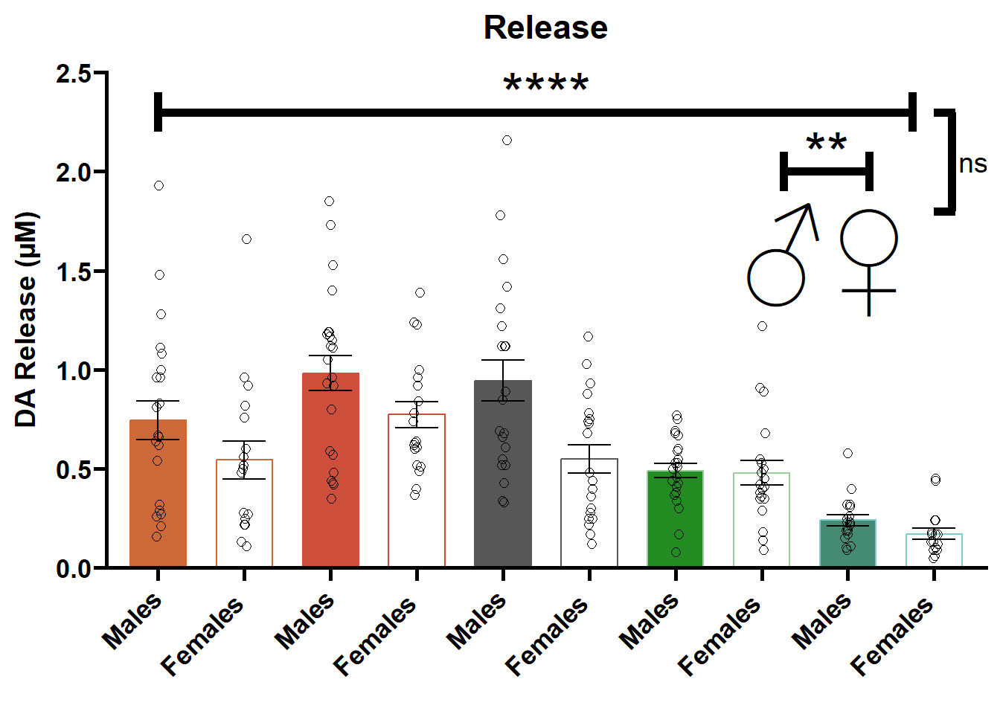
Paper Comparison (Figure 2a) - Baseline Dopamine Release
knitr::include_graphics("images/Kuiper-Figure-2a.jpg")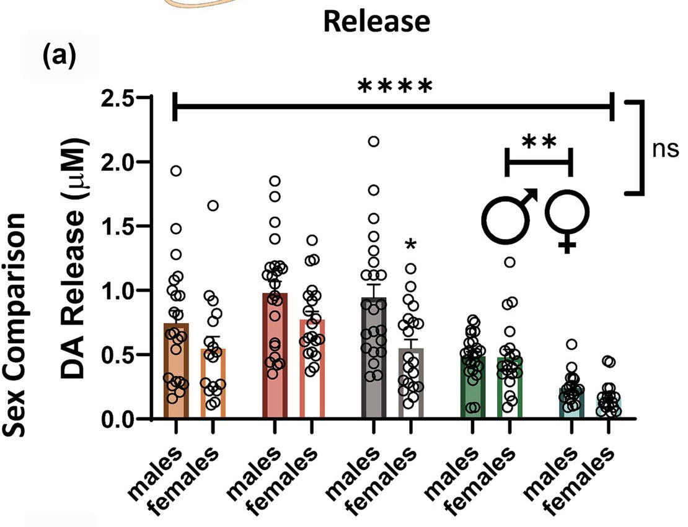
Stephen (Figure 2b) - Baseline Dopamine Uptake
I did not include explanations for each line since it is very similar to what I did above but this for Dopamine Release.
dopamine_uptake_rat_bar_graph <- rat_release_uptake_data |>
ggplot(aes(x = factor(subregion_sex, levels = c("dlCPu_Male", "dlCPu_Female",
"vmCPu_Male", "vmCPu_Female",
"core_Male", "core_Female",
"lshell_Male", "lshell_Female",
"mshell_Male", "mshell_Female")),
y = Baseline_Vmax_uM_s,
fill = factor(subregion_sex, levels = c("dlCPu_Male", "dlCPu_Female",
"vmCPu_Male", "vmCPu_Female",
"core_Male", "core_Female",
"lshell_Male", "lshell_Female",
"mshell_Male", "mshell_Female")))) +
stat_summary(geom = "bar",
fun = mean, width = .65,
aes(color = factor(subregion_sex, levels = c("dlCPu_Male", "dlCPu_Female",
"vmCPu_Male", "vmCPu_Female",
"core_Male", "core_Female",
"lshell_Male", "lshell_Female",
"mshell_Male", "mshell_Female")))) +
stat_summary(geom = "errorbar", fun.data = mean_se, width = .5) +
geom_jitter(shape = 1 ,size = 2,position = position_jitterdodge(jitter.width = .5) ,na.rm = TRUE) +
labs(title = "Uptake", y = "Vmax (µm/sec)", x = element_blank()) +
scale_x_discrete(labels = c("dlCPu_Male" = "Males", "dlCPu_Female" = "Females",
"vmCPu_Male" = "Males", "vmCPu_Female" = "Females",
"core_Male" = "Males", "core_Female" = "Females",
"lshell_Male" = "Males", "lshell_Female" = "Females",
"mshell_Male" = "Males", "mshell_Female" = "Females")) +
scale_y_continuous(limits = c(0.0,5.0), expand = c(0,0), labels = scales::number_format(accuracy = 0.1, decimal.mark = '.')) +
scale_fill_manual(values = c("dlCPu_Male" = "sienna3", "dlCPu_Female" = "grey100",
"vmCPu_Male" = "tomato3", "vmCPu_Female" = "grey100",
"core_Male" = "grey34", "core_Female" = "grey100",
"lshell_Male" = "forestgreen", "lshell_Female" = "grey100",
"mshell_Male" = "aquamarine4", "mshell_Female" = "grey100")) +
scale_color_manual(values = c("dlCPu_Male" = "sienna3", "dlCPu_Female" = "sienna3",
"vmCPu_Male" = "tomato3", "vmCPu_Female" = "tomato3",
"core_Male" = "grey34", "core_Female" = "grey34",
"lshell_Male" = "darkseagreen3", "lshell_Female" = "darkseagreen3",
"mshell_Male" = "darkslategray3", "mshell_Female" = "darkslategray3")) +
theme_prism() +
theme(axis.text.x = element_text(angle = 45, hjust = 1.2, vjust = 1.1) ,legend.title = element_blank(), legend.position ="none") +
annotate("segment", x = 1, xend = 9.75, y = 4.7, yend = 4.7, color = "black", size = 2, linetype = "solid") +
annotate("segment", x = 1, xend = 1, y = 4.9, yend = 4.5, color = "black", size = 2, linetype = "solid") +
annotate("segment", x = 9.75, xend = 9.75, y = 4.9, yend = 4.5, color = "black", size = 2, linetype = "solid") +
annotate("text", x = 8.25, y = 3.5, label ="♂",size = 20, color = "black" ) +
annotate("text", x = 9.25, y = 3.5, label ="♀",size = 20, color = "black") +
annotate("segment", x = 8.25, xend = 9.25, y = 4.2, yend = 4.2, color = "black", size = 2, linetype = "solid") +
annotate("segment", x = 8.25, xend = 8.25, y = 4.0, yend = 4.4, color = "black", size = 2, linetype = "solid") +
annotate("segment", x = 9.25, xend = 9.25, y = 4.0, yend = 4.4, color = "black", size = 2, linetype = "solid") +
annotate("text", x = 5.5, y = 4.8, label ="****",size = 10, color = "black", fontface = 1) +
annotate("text", x = 8.75, y = 4.5, label ="ns",size = 5, color = "black", fontface = 1) +
annotate("segment", x = 10.2, xend = 10.2, y = 3.85, yend = 4.7, color = "black", size = 2, linetype = "solid") +
annotate("segment", x = 10, xend = 10.25, y = 3.85, yend = 3.85, color = "black", size = 2, linetype = "solid") +
annotate("segment", x = 10, xend = 10.25, y = 4.7, yend = 4.7, color = "black", size = 2, linetype = "solid") +
annotate("text", x = 10.45, y = 4.275, label ="ns",size = 5, color = "black", fontface = 1)
dopamine_uptake_rat_bar_graph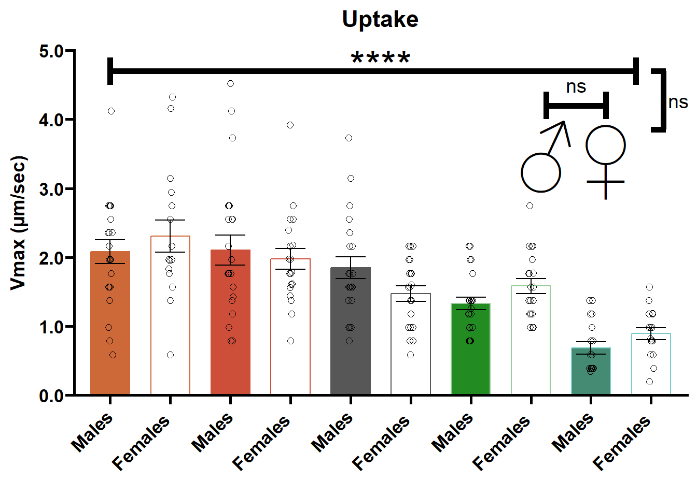
Paper Comparison (Figure 2b) - Baseline Dopamine Uptake
#| warning: FALSE
knitr::include_graphics("images/Kuiper-Figure-2b.jpg")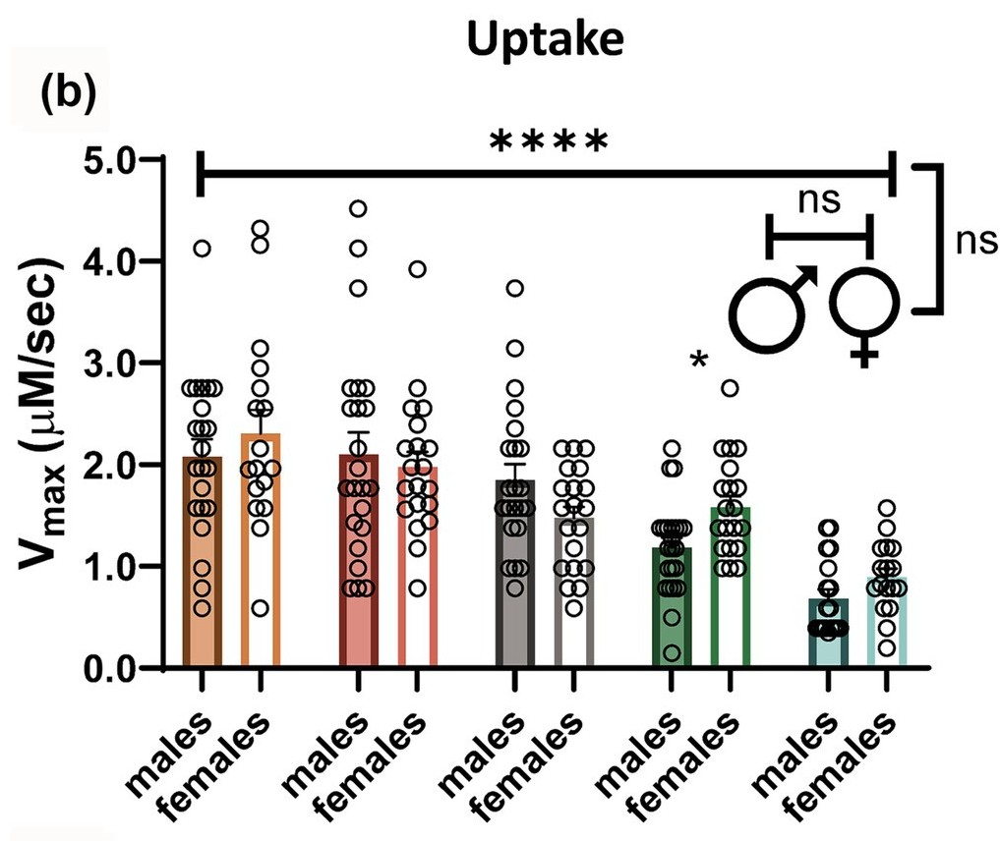
Paper Comparison (Figure 2a and 2b) - Baseline Dopamine Release and Uptake Together
#| warning: FALSE
knitr::include_graphics("images/Kuiper-Figure-2a-and-2b.jpg")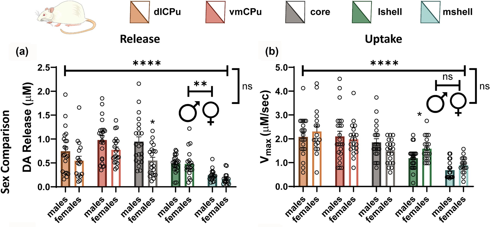
1) INFERENTIAL STATISTICS - Baseline Dopamine Release and Uptake
I decided to do inferential statistics on the two graphs I created above, which examines dopamine release (Figure 2a) and uptake (Figure 2a). In both of these graphs, they said they performed “a Two-Way ANOVA, where sex and subregion were two independent variables” which was followed by a Tukey’s multiple comparison post-hoc test “for differences between subregions in males and females separately.” This was the only information that was provided.
These were the results of the Two-way ANOVA for Dopamine Release in rats from the publication:
main effects of subregion (F(2.628,97.88) = 25.01; p < 0.0001)
main effects of sex (F(1,43) = 9.579; p = 0.0033)
no interaction effect of subregion and sex (F(4,149) = 2.266; p = 0.0677)
Stephen Two-way ANOVA - Dopamine Release
I ran a Two-Way ANOVA like they said but I could not replicate the values they got. I excluded all animals that were missing data, and they had other files mentioning additional exclusions, but they did not specify which animals. These were the results I got for my Two-Way ANOVA:
- Also a main effects of subregion (F(4,192) = 23.32; p < 0.0001)
- Also a main effects of sex (F(1,192) = 14.26; p = 0.0002)
- Also no interaction effect of subregion and sex (F(4,192) = 2.01; p = 0.094)
I noticed their degrees of freedom for subregions had decimal points and I did not understand why. So, I did some digging around and found that they likely did some type of correction (e.g. Greenhouse-Geisser or Huynh-Feldt). They do not mention anything about this though. This probably means they ran a repeated ANOVA???? BUT THEY DON’T SAY ANYTHING. I tried messing around with other packages like {afex} that could do this type of analysis but I still could not replicate it. So, overall I could not get the the same DF, F-statistic, or p-value. However, I did get the same results with there being a main effect of subregion and sex but no interaction effect of subregion and sex.
Dopamine Release Two-way ANOVA
# Two-Way ANOVA of dopamine release (baseline_uM) and subregion and sex as independent variables
#used the working data set for this analysis
dopamine_release_rat_TWOWAY_ANOVA <- aov(data = rat_release_uptake_data, baseline_uM ~ Subregion * Sex)
#results of my Two-Way ANOVA
dopamine_release_rat_TWOWAY_ANOVACall:
aov(formula = baseline_uM ~ Subregion * Sex, data = rat_release_uptake_data)
Terms:
Subregion Sex Subregion:Sex Residuals
Sum of Squares 10.590834 1.619035 0.914292 21.795240
Deg. of Freedom 4 1 4 192
Residual standard error: 0.3369227
Estimated effects may be unbalancedsummary(dopamine_release_rat_TWOWAY_ANOVA) Df Sum Sq Mean Sq F value Pr(>F)
Subregion 4 10.591 2.6477 23.324 9.97e-16 ***
Sex 1 1.619 1.6190 14.263 0.000212 ***
Subregion:Sex 4 0.914 0.2286 2.014 0.094149 .
Residuals 192 21.795 0.1135
---
Signif. codes: 0 '***' 0.001 '**' 0.01 '*' 0.05 '.' 0.1 ' ' 1Dopamine Release Tukey’s HSD multiple comparison
I next ran a Tukey’s HSD multiple comparisons post-hoc test to look at the differences of Dopamine Release between subregions in males and females separately. I first ran a One-Way ANOVA for males and then females. This was another one where I could not get the same p-value for the post-hoc test and a couple of results varied for the males.
Males
- lshell versus mshell (p = 0.0002): I found not significant (p = 0.2129)
Female
- vmCPu versus core (p = 0.0456): I found not significant (p = 0.1169)
Stephen Dopamine Release Tukey’s HSD MALE
#| warning: FALSE
#created new data sets to filter males and females
#data set of just males
male_rat_release_uptake_data <- rat_release_uptake_data |>
filter(Sex == "Male")
#data set of just females
female_rat_release_uptake_data <- rat_release_uptake_data |>
filter(Sex == "Female")
# One-way ANOVA for dopamine release and Males
male_rat_release_ANOVA <- aov(data = male_rat_release_uptake_data, baseline_uM ~ Subregion)
# One-way ANOVA for dopamine release and Females
female_rat_release_ANOVA <- aov(data = female_rat_release_uptake_data, baseline_uM ~ Subregion)
#TukeyHSD Post hoc for males
male_rat_release_TUKEYHSD <- TukeyHSD(male_rat_release_ANOVA)
#Pulling only the P values for TukeyHSD Post hoc for males
male_rat_release_TUKEYHSD_pvalue <- male_rat_release_TUKEYHSD$Subregion [,"p adj"]
#I used enframe() to convert the data into long form
male_rat_release_TUKEYHSD_long <- enframe(male_rat_release_TUKEYHSD_pvalue,
name = "Male_Comparison",
value = "P_Value")
#TukeyHSD Post hoc for males
male_rat_release_TUKEYHSD_long# A tibble: 10 × 2
Male_Comparison P_Value
<chr> <dbl>
1 vmCPu-dlCPu 0.212
2 core-dlCPu 0.387
3 lshell-dlCPu 0.154
4 mshell-dlCPu 0.000410
5 core-vmCPu 0.997
6 lshell-vmCPu 0.000180
7 mshell-vmCPu 0.0000000612
8 lshell-core 0.000759
9 mshell-core 0.000000342
10 mshell-lshell 0.213 Paper Dopamine Release Tukey’s HSD MALE
#Paper Table TukeyHSD Post hoc for males
knitr::include_graphics("images/Kuiper-Table-4-Male-Release.jpg")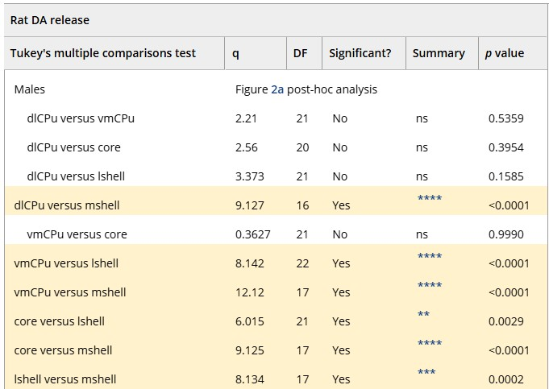
Stephen Dopamine Release Tukey’s HSD FEMALE
#TukeyHSD Post hoc for females
female_rat_release_TUKEYHSD <- TukeyHSD(female_rat_release_ANOVA)
#Pulling only the P values for TukeyHSD Post hoc for females
female_rat_release_TUKEYHSD_pvalue <- female_rat_release_TUKEYHSD$Subregion [,"p adj"]
#I used enframe() to convert the data into long form
female_rat_release_TUKEYHSD_long <- enframe(female_rat_release_TUKEYHSD_pvalue,
name = "Female_Comparison",
value = "P_Value")
female_rat_release_TUKEYHSD_long# A tibble: 10 × 2
Female_Comparison P_Value
<chr> <dbl>
1 vmCPu-dlCPu 0.135
2 core-dlCPu 1.00
3 lshell-dlCPu 0.960
4 mshell-dlCPu 0.00294
5 core-vmCPu 0.117
6 lshell-vmCPu 0.0171
7 mshell-vmCPu 0.000000137
8 lshell-core 0.945
9 mshell-core 0.00159
10 mshell-lshell 0.0157 Paper Dopamine Release Tukey’s HSD FEMALE
#Paper Table 4 TukeyHSD Post hoc for Females
knitr::include_graphics("images/Kuiper-Table-4-Female-Release.jpg")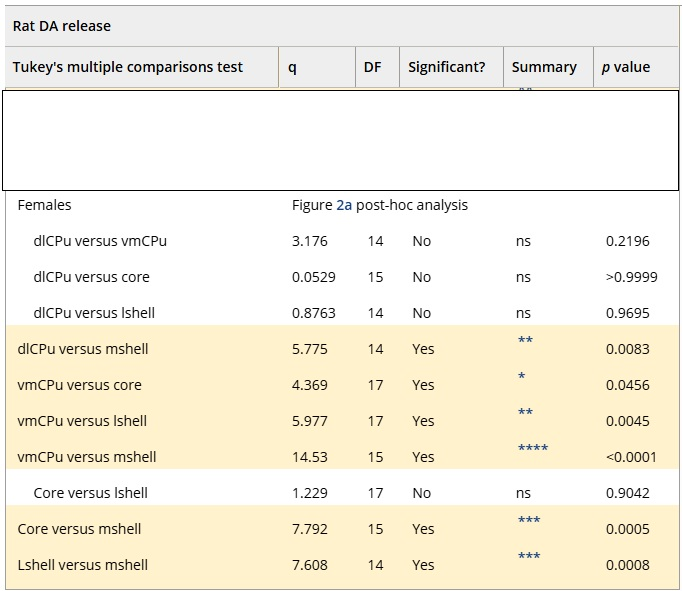
Stephen Dopamine Uptake Statistics
They ran a very similar analysis for Dopamine uptake. They did another Two-Way ANOVA, where sex and subregion were two independent variables. Which was followed by a Tukey’s HSD multiple comparisons post-hoc test “for differences between subregions in males and females separately.”
These were the results of the Two-way ANOVA for Dopamine uptake in rats from the publication:
main effect of subregion (F(3.299,122.9) = 27.04; p < 0.0001)
no main effect of sex (F(1,43) = 0.4462; p = 0.6852)
no interaction effect of subregion and sex (F(4,149) = 2.410; p = 0.0969)
I ran another Two-Way ANOVA like they said but I again could not replicate the values they got. These were the results I got for my Two-Way ANOVA:
- Also a main effects of subregion (F(4,192) = 24.55; p < 0.0001)
- Also no main effect of sex (F(1,192) = 0.084, p = 0.773)
- Also no interaction effect of subregion and sex (F(4,192) = 1.70; p = 0.152)
So, overall I could not get the the same DF, F-statistic, or p-value once again. However, I did get the same results with there being a main effect of subregion, no main effect of sex, and no interaction effect of subregion and sex.
Dopamine Uptake Two-way ANOVA
# ANOVA of dopamine uptake (Baseline_Vmax_uM_s) and subregion and sex as independent variables
#used working data set for this analysis
dopamine_uptake_rat_TWOWAY_ANOVA <- aov(data = rat_release_uptake_data, Baseline_Vmax_uM_s ~ Subregion * Sex)
#results of my Two-Way ANOVA
dopamine_uptake_rat_TWOWAY_ANOVACall:
aov(formula = Baseline_Vmax_uM_s ~ Subregion * Sex, data = rat_release_uptake_data)
Terms:
Subregion Sex Subregion:Sex Residuals
Sum of Squares 45.53465 0.03883 3.14740 89.02822
Deg. of Freedom 4 1 4 192
Residual standard error: 0.6809469
Estimated effects may be unbalancedsummary(dopamine_uptake_rat_TWOWAY_ANOVA) Df Sum Sq Mean Sq F value Pr(>F)
Subregion 4 45.53 11.384 24.550 <2e-16 ***
Sex 1 0.04 0.039 0.084 0.773
Subregion:Sex 4 3.15 0.787 1.697 0.152
Residuals 192 89.03 0.464
---
Signif. codes: 0 '***' 0.001 '**' 0.01 '*' 0.05 '.' 0.1 ' ' 1Dopamine Uptake Tukey’s HSD multiple comparison
I next ran the Tukey’s HSD multiple comparisons post-hoc test to look at the differences in Dopamine uptake between subregions in males and females separately. I first ran a One-Way ANOVA for males and then females. This was another one where I could not get the same p-value for the post-hoc test and a couple of results varied for the males.
Males
- core versus lshell (p = p = 0.0386): I found not significant (p = 0.1235)
Stephen Dopamine Uptake Tukey’s HSD MALE
# I used the same data sets that filtered males and females from above.
# One-way ANOVA for dopamine uptake and Males
male_rat_uptake_ANOVA <- aov(data = male_rat_release_uptake_data, Baseline_Vmax_uM_s ~ Subregion)
# One-way ANOVA for dopamine uptake and Males
female_rat_uptake_ANOVA <- aov(data = female_rat_release_uptake_data, Baseline_Vmax_uM_s ~ Subregion)
#TukeyHSD Post hoc for males
male_rat_uptake_TUKEYHSD <- TukeyHSD(male_rat_uptake_ANOVA)
#Pulling only the P values for TukeyHSD Post hoc for males
male_rat_uptake_TUKEYHSD_pvalue <- male_rat_uptake_TUKEYHSD$Subregion [,"p adj"]
#I used enframe() to convert the data into long form
male_rat_uptake_TUKEYHSD_long <- enframe(male_rat_uptake_TUKEYHSD_pvalue,
name = "Male_Comparison",
value = "P_Value")
#TukeyHSD Post hoc for females
male_rat_uptake_TUKEYHSD_long# A tibble: 10 × 2
Male_Comparison P_Value
<chr> <dbl>
1 vmCPu-dlCPu 1.00
2 core-dlCPu 0.828
3 lshell-dlCPu 0.00670
4 mshell-dlCPu 0.000000256
5 core-vmCPu 0.766
6 lshell-vmCPu 0.00417
7 mshell-vmCPu 0.000000123
8 lshell-core 0.124
9 mshell-core 0.0000206
10 mshell-lshell 0.0467 Paper Dopamine Uptake Tukey’s HSD MALE
#Paper Table 5 TukeyHSD Post hoc for males
knitr::include_graphics("images/Kuiper-Table-5-Male-Uptake.jpg")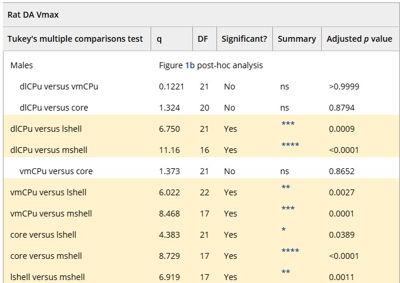
Stephen Dopamine Uptake Tukey’s HSD FEMALE
#TukeyHSD Post hoc for females
female_rat_uptake_TUKEYHSD <- TukeyHSD(female_rat_uptake_ANOVA)
#Pulling only the P values for TukeyHSD Post hoc for males
female_rat_uptake_TUKEYHSD_pvalue <- female_rat_uptake_TUKEYHSD$Subregion [,"p adj"]
#I used enframe() to convert the data into long form
female_rat_uptake_TUKEYHSD_long <- enframe(female_rat_uptake_TUKEYHSD_pvalue,
name = "Male_Comparison",
value = "P_Value")
female_rat_uptake_TUKEYHSD_long# A tibble: 10 × 2
Male_Comparison P_Value
<chr> <dbl>
1 vmCPu-dlCPu 0.500
2 core-dlCPu 0.00103
3 lshell-dlCPu 0.00591
4 mshell-dlCPu 0.0000000261
5 core-vmCPu 0.0892
6 lshell-vmCPu 0.272
7 mshell-vmCPu 0.00000872
8 lshell-core 0.982
9 mshell-core 0.0432
10 mshell-lshell 0.00982 Paper Dopamine Uptake Tukey’s HSD FEMALE
#Paper Table 5 TukeyHSD Post hoc for Females
knitr::include_graphics("images/Kuiper-Table-5-Female-Uptake.jpg")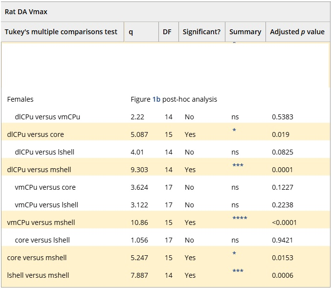
1) DESCRIPTIVE STATISTICS - Baseline Dopamine Release and Uptake
This paper has very minimal descriptive statistics, which I find unusual. However, I decided to add some descriptive statistics of the two graphs I created above, which examine Dopamine release (Figure 2a) and uptake (Figure 2b). I was having trouble replicating their ANOVAs and Tukey HSD, so it would have been nice to be able to compare these to something. They do seem to match up with what is represented in the graphs.
Dopamine Release Descriptive Statistics (Mean, Standard Deviation, Standard Error)
#Creating a new table with Descriptive Statistics
dopamine_release_descriptive_stats <- rat_release_uptake_data |>
#adding in the subregion and sex
mutate(Sex = factor(Sex, levels = c("Male", "Female")),
Subregion = factor(Subregion, levels = c("dlCPu", "vmCPu","core","lshell","mshell"))) |>
#grouping by subregion so their side by side and then sex
group_by(Subregion, Sex) |>
#droping all animals that are missing
drop_na(baseline_uM, Baseline_Vmax_uM_s, Baseline_Vmax_nM_s) |>
#getting the Mean, Standard Deviation, Standard Error
summarise(Dopamine_ReleaseM = mean(baseline_uM),
Dopamine_ReleaseSD = sd(baseline_uM),
Dopamine_ReleaseSE = sd(baseline_uM) / sqrt(length(baseline_uM)))
dopamine_release_descriptive_stats# A tibble: 10 × 5
# Groups: Subregion [5]
Subregion Sex Dopamine_ReleaseM Dopamine_ReleaseSD Dopamine_ReleaseSE
<fct> <fct> <dbl> <dbl> <dbl>
1 dlCPu Male 0.744 0.458 0.0977
2 dlCPu Female 0.545 0.395 0.0957
3 vmCPu Male 0.981 0.424 0.0883
4 vmCPu Female 0.772 0.289 0.0647
5 core Male 0.944 0.485 0.103
6 core Female 0.548 0.314 0.0703
7 lshell Male 0.490 0.172 0.0359
8 lshell Female 0.479 0.273 0.0610
9 mshell Male 0.24 0.118 0.0279
10 mshell Female 0.17 0.118 0.0286Dopamine Uptake Descriptive Statistics (Mean, Standard Deviation, Standard Error)
#Creating a new table with Descriptive Statistics
dopamine_uptake_descriptive_stats <- rat_release_uptake_data |>
#adding in the subregion and sex
mutate(Sex = factor(Sex, levels = c("Male", "Female")),
Subregion = factor(Subregion, levels = c("dlCPu", "vmCPu","core","lshell","mshell"))) |>
#grouping by subregion so their side by side and then sex
group_by(Subregion, Sex) |>
#droping all animals that are missing
drop_na(baseline_uM, Baseline_Vmax_uM_s, Baseline_Vmax_nM_s) |>
#getting the Mean, Standard Deviation, Standard Error
summarise(Dopamine_uptakeM = mean(Baseline_Vmax_uM_s),
Dopamine_uptakeSD = sd(Baseline_Vmax_uM_s),
Dopamine_uptakeSE = sd(Baseline_Vmax_uM_s) / sqrt(length(Baseline_Vmax_uM_s)))
dopamine_uptake_descriptive_stats# A tibble: 10 × 5
# Groups: Subregion [5]
Subregion Sex Dopamine_uptakeM Dopamine_uptakeSD Dopamine_uptakeSE
<fct> <fct> <dbl> <dbl> <dbl>
1 dlCPu Male 2.08 0.799 0.170
2 dlCPu Female 2.30 0.960 0.233
3 vmCPu Male 2.10 1.03 0.216
4 vmCPu Female 1.98 0.673 0.150
5 core Male 1.85 0.734 0.157
6 core Female 1.48 0.500 0.112
7 lshell Male 1.33 0.427 0.0891
8 lshell Female 1.58 0.479 0.107
9 mshell Male 0.685 0.373 0.0879
10 mshell Female 0.893 0.348 0.08442) VISUALIZATION REPLICATION - Baseline Dopamine Release and Uptake Correlations
I next decided to replicate another 5 graphs from this paper which are (Figure 3b, 3d, 3f, 3h, 3j). I used {ggplot2} to create all these graphs. I first had to create a new data set that only contained data for each specific subregion. It also contains a new variable that has the ratio of Dopamine Release/uptake (baseline_uM/Baseline_Vmax_uM_s). This was used for my descriptive and inferential statistics later on.
I was able to successfully create each of the following graphs. However, I did have some problems recreating the last two figures.
Figure 3h: Dopamine Release/Uptake in the lshell: The slope for the males is completely different from what they graphed and it is also different in the linear regression model. They may have removed more animals? or fixed the data?
Figure 3j: Correlation between Dopamine Release/Uptake in the mshell: A similar thing happened with the Females in this graph but not as noticeable as in Figure 3h. The slope was also different in the linear regression model.
Figure 3b: Correlation between Dopamine Release/Uptake in the subregion dlCPu between males and females.
Stephen (Figure 3b) Dopamine Release/Uptake in the subregion dlCPu
#| warning: FALSE
#I first created a new data set that only contained data for the dlCPu subregion
#dlCPu data table
release_uptake_dlCPu_data <- rat_release_uptake_data |>
# filter out only dlCPu subregion
filter(Subregion == "dlCPu") |>
#droping an NA from the data set
drop_na(baseline_uM, Baseline_Vmax_uM_s) |>
#creating a new variables containing the ratio of Release/uptake (baseline_uM/Baseline_Vmax_uM_s)
# I also set the levels of sex so that Males can come first;
mutate(release_uptake_ratio = baseline_uM / Baseline_Vmax_uM_s, Sex = factor(Sex, levels = c("Male", "Female")))
#Correlation Plot
#setting my x and y
#x = Release (baseline_uM)
#y = Uptake (Baseline_Vmax_uM_s)
ggplot(release_uptake_dlCPu_data, aes(x = baseline_uM, y = Baseline_Vmax_uM_s, color = Sex)) +
#adding individual points
geom_point(size = 4) +
#setting the color for each sex
scale_color_manual(values = c("Male" = "sienna4", "Female" = "sienna3")) +
# Adding linear model
geom_smooth(method = "lm", se = FALSE) +
# adding titles
labs(title = "Rat", y = " DA Vmax (µM/sec)" , x = "DA Release (µM)") +
# setting the y axis
scale_y_continuous(limits = c(0,6.0),
expand = c(0,0),
breaks = seq(0,6, by = 2),
labels = scales::number_format(accuracy = 0.1, decimal.mark = '.')) +
# setting the x axis
scale_x_continuous(limits = c(0,2.5),
expand = c(0,0),
labels = scales::number_format(accuracy = 0.1, decimal.mark = '.')) +
#setting the theme to prism
theme_prism() +
#this moves the figure legend and the size of the graph
theme(legend.position = c(.125,.95), legend.text = element_text(size = 15), plot.margin = margin(25,25,25,25)) +
#adding significance levels
annotate("text", x = .52, y = 5.83, label ="***",size = 7, color = "black", fontface = 1)Warning: A numeric `legend.position` argument in `theme()` was deprecated in ggplot2
3.5.0.
ℹ Please use the `legend.position.inside` argument of `theme()` instead.`geom_smooth()` using formula = 'y ~ x'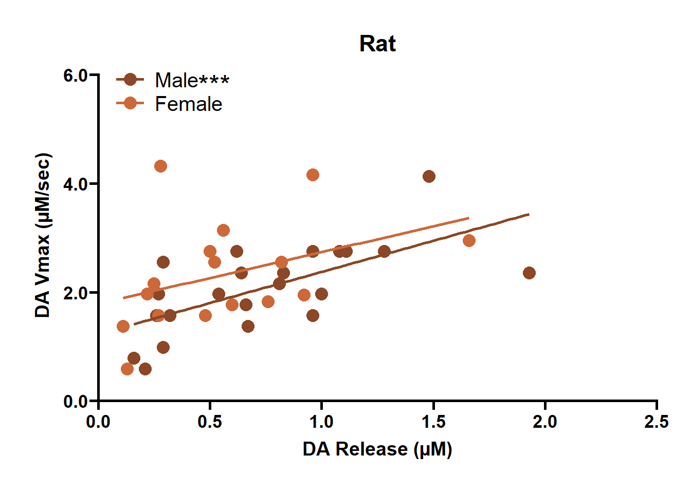
Paper Comparison (Figure 3b) Dopamine Release/Uptake in the subregion dlCPu
knitr::include_graphics("images/Kuiper-Figure-3b.jpg")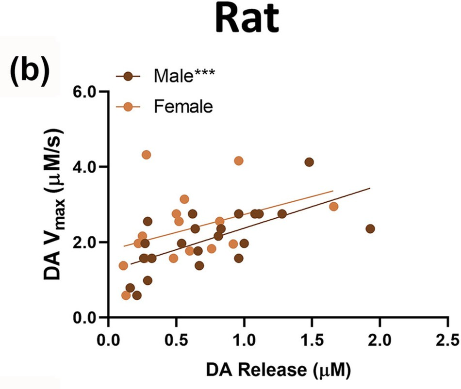
Figure 3d: Correlation between Dopamine Release/Uptake in the subregion vmCPu between males and females.
Stephen (Figure 3d) Dopamine Release/Uptake in the subregion vmCPu
release_uptake_vmCPu_data <- rat_release_uptake_data |>
filter(Subregion == "vmCPu") |>
drop_na(baseline_uM, Baseline_Vmax_uM_s) |>
mutate(release_uptake_ratio = baseline_uM / Baseline_Vmax_uM_s, Sex = factor(Sex, levels = c("Male", "Female")))
ggplot(release_uptake_vmCPu_data, aes(x = baseline_uM, y = Baseline_Vmax_uM_s, color = Sex)) +
geom_point(size = 4) +
scale_color_manual(values = c("Male" = "tomato4", "Female" = "tomato3")) +
geom_smooth(method = "lm", se = FALSE) +
labs(title = "Rat", y = " DA Vmax (µM/sec)" , x = "DA Release (µM)") +
scale_y_continuous(limits = c(0,5.0),
expand = c(0,0),
breaks = seq(0,5, by = 1),
labels = scales::number_format(accuracy = 0.1, decimal.mark = '.')) +
scale_x_continuous(limits = c(0,2.0),
expand = c(0,0),
labels = scales::number_format(accuracy = 0.1, decimal.mark = '.')) +
theme_prism() +
theme(legend.position = c(.125,.95), legend.text = element_text(size = 15), plot.margin = margin(25,25,25,25)) +
annotate("text", x = .42, y = 4.85, label ="***",size = 7, color = "black", fontface = 1) +
annotate("text", x = .46, y = 4.55, label ="*",size = 7, color = "black", fontface = 1)`geom_smooth()` using formula = 'y ~ x'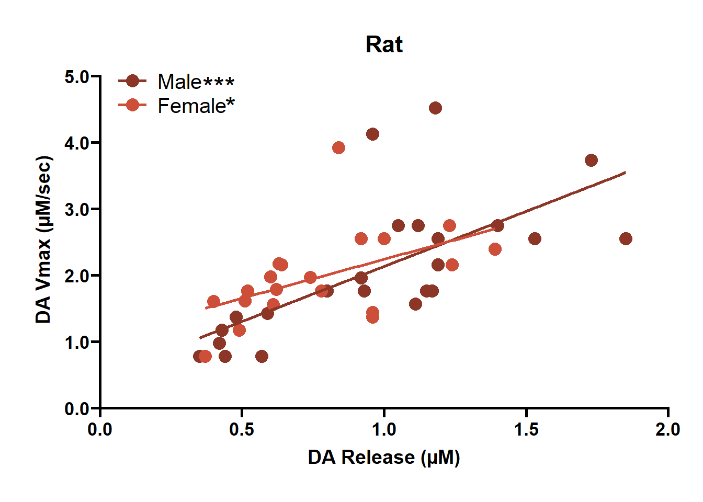
Paper Comparison (Figure 3d) Dopamine Release/Uptake in the subregion vmCPu
knitr::include_graphics("images/Kuiper-Figure-3d.jpg")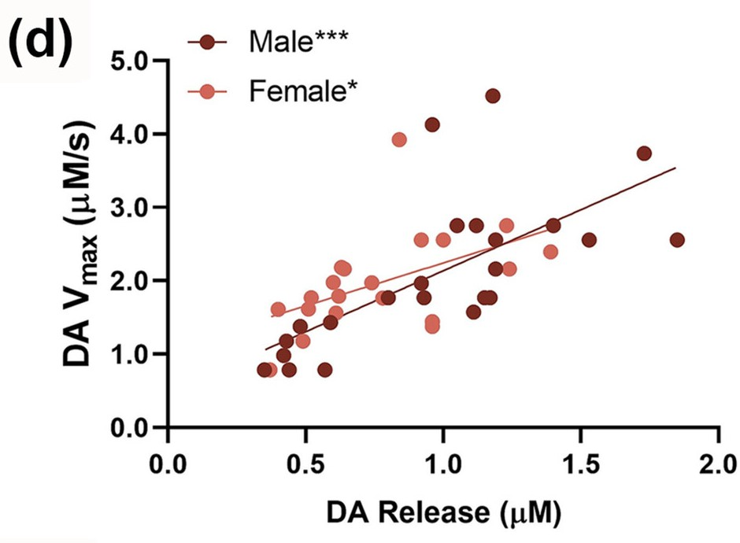
Figure 3f: Correlation between Dopamine Release/Uptake in the subregion core between males and females.
Stephen (Figure 3f) Dopamine Release/Uptake in the subregion core
release_uptake_core_data <- rat_release_uptake_data |>
filter(Subregion == "core") |>
drop_na(baseline_uM, Baseline_Vmax_uM_s) |>
mutate(release_uptake_ratio = baseline_uM / Baseline_Vmax_uM_s, Sex = factor(Sex, levels = c("Male", "Female")))
ggplot(release_uptake_core_data, aes(x = baseline_uM, y = Baseline_Vmax_uM_s, color = Sex)) +
geom_point(size = 4) +
scale_color_manual(values = c("Male" = "grey15", "Female" = "grey70")) +
geom_smooth(method = "lm", se = FALSE) +
labs(title = "Rat", y = " DA Vmax (µM/sec)" , x = "DA Release (µM)") +
scale_y_continuous(limits = c(0,5.0),
expand = c(0,0),
breaks = seq(0,5, by = 1),
labels = scales::number_format(accuracy = 0.1, decimal.mark = '.')) +
scale_x_continuous(limits = c(0,2.5),
expand = c(0,0),
labels = scales::number_format(accuracy = 0.1, decimal.mark = '.')) +
theme_prism() +
theme(legend.position = c(.125,.95), legend.text = element_text(size = 15), plot.margin = margin(25,25,25,25)) +
annotate("text", x = .5, y = 4.85, label ="**",size = 7, color = "black", fontface = 1) +
annotate("text", x = .64, y = 4.55, label ="****",size = 7, color = "black", fontface = 1)`geom_smooth()` using formula = 'y ~ x'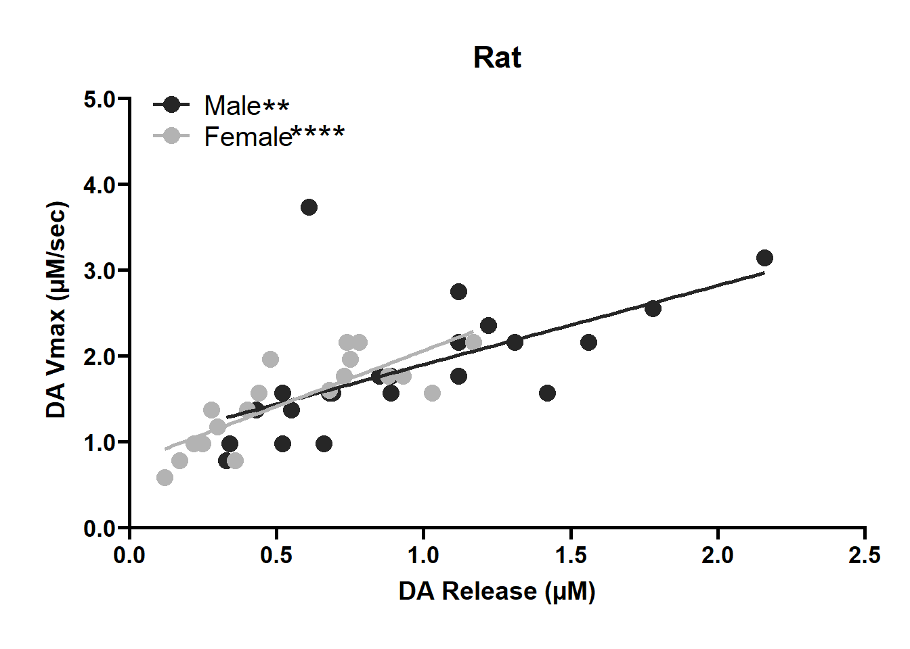
Paper Comparison (Figure 3f) Dopamine Release/Uptake in the subregion core
knitr::include_graphics("images/Kuiper-Figure-3f.jpg")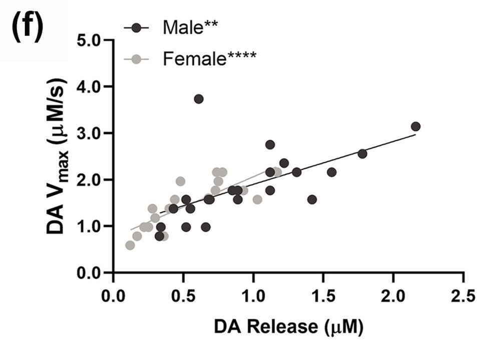
Figure 3h: Correlation between Dopamine Release/Uptake in the subregion lshell between males and females.
Stephen (Figure 3h) Dopamine Release/Uptake in the subregion lshell
release_uptake_lshell_data <- rat_release_uptake_data |>
filter(Subregion == "lshell") |>
drop_na(baseline_uM, Baseline_Vmax_uM_s) |>
mutate(release_uptake_ratio = baseline_uM / Baseline_Vmax_uM_s, Sex = factor(Sex, levels = c("Male", "Female")))
ggplot(release_uptake_lshell_data, aes(x = baseline_uM, y = Baseline_Vmax_uM_s, color = Sex)) +
geom_point(size = 4) +
scale_color_manual(values = c("Male" = "darkgreen", "Female" = "darkseagreen3")) +
geom_smooth(method = "lm", se = FALSE) +
labs(title = "Rat", y = " DA Vmax (µM/sec)" , x = "DA Release (µM)") +
scale_y_continuous(limits = c(0,3.0),
expand = c(0,0),
breaks = seq(0,5, by = 1),
labels = scales::number_format(accuracy = 0.1, decimal.mark = '.')) +
scale_x_continuous(limits = c(0,1.5),
expand = c(0,0),
labels = scales::number_format(accuracy = 0.1, decimal.mark = '.')) +
theme_prism() +
theme(legend.position = c(.125,.95), legend.text = element_text(size = 15), plot.margin = margin(25,25,25,25)) +
annotate("text", x = .31, y = 2.92, label ="**",size = 7, color = "black", fontface = 1) +
annotate("text", x = .36, y = 2.75, label ="**",size = 7, color = "black", fontface = 1)`geom_smooth()` using formula = 'y ~ x'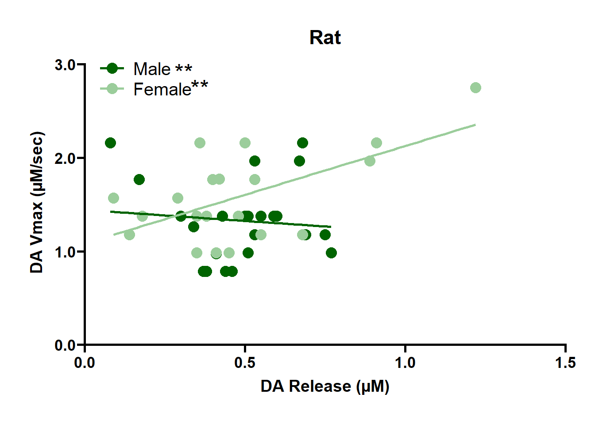
Paper Comparison (Figure 3h) Dopamine Release/Uptake in the subregion lshell
knitr::include_graphics("images/Kuiper-Figure-3h.jpg")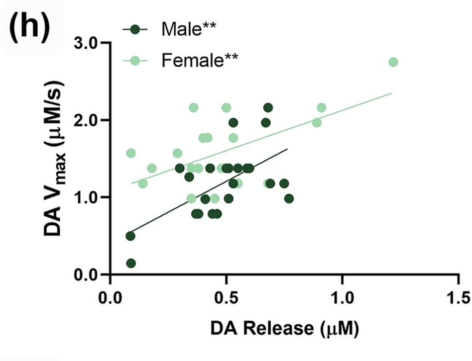
Figure 3j: Correlation between Dopamine Release/Uptake in the subregion mshell between males and females.
Stephen (Figure 3j) Dopamine Release/Uptake in the subregion mshell
release_uptake_mshell_data <- rat_release_uptake_data |>
filter(Subregion == "mshell") |>
drop_na(baseline_uM, Baseline_Vmax_uM_s) |>
mutate(release_uptake_ratio = baseline_uM / Baseline_Vmax_uM_s, Sex = factor(Sex, levels = c("Male", "Female")))
ggplot(release_uptake_mshell_data, aes(x = baseline_uM, y = Baseline_Vmax_uM_s, color = Sex)) +
geom_point(size = 4) +
scale_color_manual(values = c("Male" = "darkslategray", "Female" = "darkslategray3")) +
geom_smooth(method = "lm", se = FALSE) +
labs(title = "Rat", y = " DA Vmax (µM/sec)" , x = "DA Release (µM)") +
scale_y_continuous(limits = c(0,2.0),
expand = c(0,0),
breaks = seq(0,5, by = .5),
labels = scales::number_format(accuracy = 0.1, decimal.mark = '.')) +
scale_x_continuous(limits = c(0,0.8),
expand = c(0,0),
labels = scales::number_format(accuracy = 0.1, decimal.mark = '.')) +
theme_prism() +
theme(legend.position = c(.125,.95), legend.text = element_text(size = 15), plot.margin = margin(25,25,25,25)) +
annotate("text", x = .16, y = 1.93, label ="**",size = 7, color = "black", fontface = 1) +
annotate("text", x = .182, y = 1.8, label ="*",size = 7, color = "black", fontface = 1)`geom_smooth()` using formula = 'y ~ x'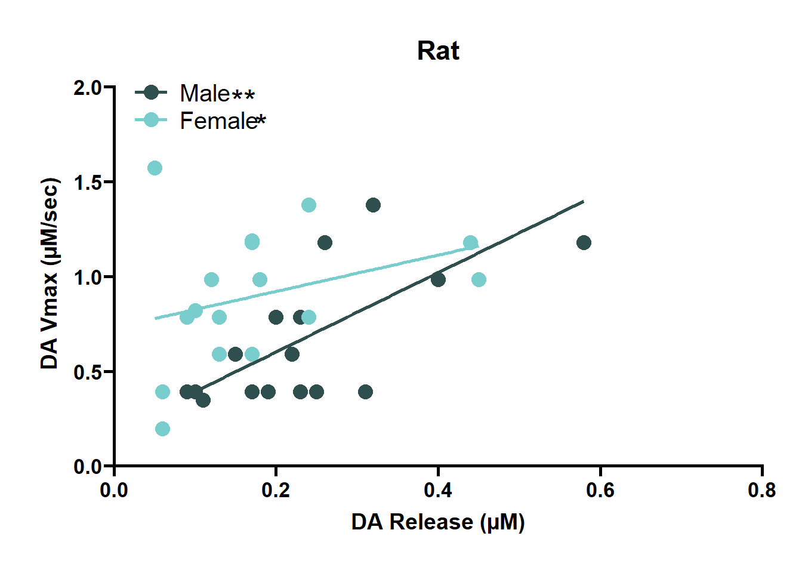
Paper Comparison (Figure 3j) Dopamine Release/Uptake in the subregion mshell
knitr::include_graphics("images/Kuiper-Figure-3j.jpg")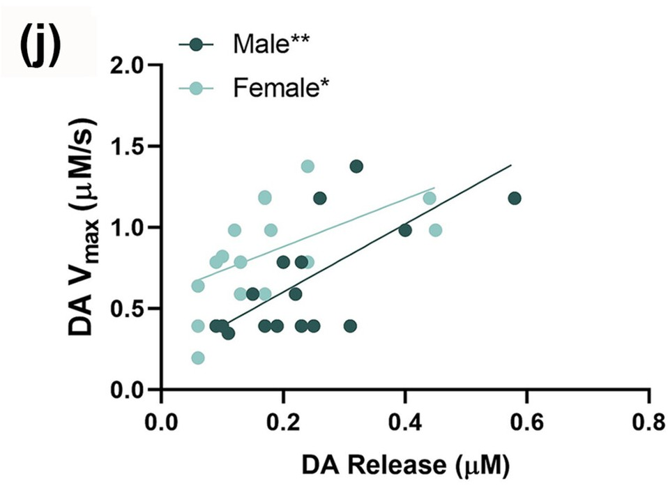
2) DESCRIPTIVE AND INFERENTIAL STATISTICS - Baseline Dopamine Release and Uptake Correlations
I next decided to do a combination of descriptive and inferential statistics together since this is how they did it in the paper. They first calculated the mean ratio of Dopamine Release and Uptake along with the standard error (SE) for this ratio for each region and between males and females. After this, they wanted to determine if dopamine release and uptake were correlated by using a linear regression model. They first ran the linear regression model for the males and then the females separately for each subregion. Then they compared between sex within each region.
I was having trouble calculating the slope, slope SE, R squared, df numerator, df denominator, f statistic, p-value of the ratio for each sex and subregion, and the overall sex comparison p-value for each subregion. I had to do it all by hand so decided to create two functions that would help me calculate it and put into a table.
Steps for I took to get the Dopamine Release and Uptake Ratio Statistics and Correlations
I calculated the mean and SE for dopamine Release/Uptake ratio and placed it into a table with its corresponding sex and subregion.
I created new data tables containing only male or female rats for each specific region. I then ran the linear regression models for male or female rats for each specific region. Then using the function I created I calculated all of the statistics they reported and placed them into a table with its corresponding sex and subregion.
I ran a linear regression model to compare male and female rats for each specific region. Then using the function I created I calculated the p-value and placed it into a table with its corresponding sex and subregion.
I combined all of the tables for each corresponding subregion.
I finally combined each table I created from each subregion into one large table like they did in the paper.
My Functions
# Cool function I wrote to spit out the stats I need from each sex and region
# 2 inputs
# 1) the data table to get the sex and subregion
# 2) the linear model to get all the stats
release_uptake_ratio_STATS <- function(data_table, linear_model) {
x <- summary(linear_model) #gets the summary of the linear model
tibble(Sex = unique(data_table$Sex), #getting the corresponding sex ; unique() gets rid of the repeated rows
Subregion = unique(data_table$Subregion), #getting the corresponding subegion
Slope = x$coefficients[2,1], # Slope (β1) of release and uptake ratio
slope_SE = x$coefficients[2,2], # Slope (β1) standard error of release and uptake ratio
R_squared = x$r.squared, #R Squared for release and uptake ratio
df_numerator = x$fstatistic[2], # degrees of freedom numerator
df_denominator = x$fstatistic[3], # degrees of freedom denominator
f_statistic = x$fstatistic[1], # f statistic
ratio_p_value = x$coefficients[2,4] #p-value
)
}
# Another Cool function I wrote to spit out the overall sex p-value
# 2 inputs
# 1) the data table to get the sex and subregion
# 2) the linear model to get all the stats
release_uptake_ratio_STATS_OVERALL <- function(data_table, linear_model) {
x <- summary(linear_model) #gets the summary of the linear model
tibble(Sex = unique(data_table$Sex), #getting the corresponding sex ; unique() gets rid of the repeated rows
Subregion = unique(data_table$Subregion), #getting the corresponding subegion
sex_p_value = x$coefficients[2,4] #p-value
)
}Correlation between Dopamine Release/Uptake in the subregion dlCPu between males and females.
#Running the linear regression model for dlCPu
#I am using the data table I created from the correlation graphs above for this specific subregion
# I am creating a new table with the descriptive stats (mean and SE) of dopamine release/uptake ratio
release_uptake_dlCPu_ratio_MSE <- release_uptake_dlCPu_data |>
#grouping by sex and adding Subregion to table ; this makes it easier to compare in table
group_by(Sex, Subregion) |>
#getting the mean and SE of the release and uptake ratio
summarize(mean_ratio = mean(release_uptake_ratio),
se_ratio = sd(release_uptake_ratio) / sqrt(n()))
#I then seperated the data by sex for individual sex correlations
#x = Dopamine release (baseline_uM)
#y = Dopamine uptake Baseline_Vmax_uM_s
# male dlCPu
release_uptake_dlCPu_data_Male <- release_uptake_dlCPu_data |>
filter(Sex == "Male") |>
drop_na(baseline_uM, Baseline_Vmax_nM_s,Baseline_Vmax_uM_s)
# female dlCPu
release_uptake_dlCPu_data_Female <-release_uptake_dlCPu_data |>
filter(Sex == "Female") |>
drop_na(baseline_uM, Baseline_Vmax_nM_s,Baseline_Vmax_uM_s)
#male dlCPu linear model
release_uptake_dlCPu_Male_LM <- lm(data = release_uptake_dlCPu_data_Male, Baseline_Vmax_uM_s ~ baseline_uM)
#Female dlCPu linear model
release_uptake_dlCPu_Female_LM <- lm(data = release_uptake_dlCPu_data_Female, Baseline_Vmax_uM_s ~ baseline_uM)
# Grabbing the slope, Std.Error of the slope, R-squared value, degress of freedom, f-statistic, and p-value for each lm()
dlCPu_Male_stats <- release_uptake_ratio_STATS(release_uptake_dlCPu_data_Male,release_uptake_dlCPu_Male_LM)
dlCPu_Female_stats <- release_uptake_ratio_STATS(release_uptake_dlCPu_data_Female,release_uptake_dlCPu_Female_LM)
# this is combining everything right above into same table
dlCPu_Male_Female_stats <- bind_rows(dlCPu_Male_stats,dlCPu_Female_stats)
#Overall Sex comparison for dlCPu and table
release_uptake_dlCPu_LM <- lm(data = release_uptake_dlCPu_data, release_uptake_ratio ~ Sex)
dlCPu_Male_Female_p <- release_uptake_ratio_STATS_OVERALL(release_uptake_dlCPu_data, release_uptake_dlCPu_LM)
#Combiniing all of the tables I created for dlCPu
#this will be useful for later when I create my large table
release_uptake_dlCPu_list <- list(release_uptake_dlCPu_ratio_MSE, dlCPu_Male_Female_stats, dlCPu_Male_Female_p)
release_uptake_dlCPu_table <- reduce(release_uptake_dlCPu_list, inner_join, by = c("Sex","Subregion"))Correlation between Dopamine Release/Uptake in the subregion vmCPu between males and females.
release_uptake_vmCPu_ratio_MSE <- release_uptake_vmCPu_data |>
group_by(Sex, Subregion) |>
summarize(mean_ratio = mean(release_uptake_ratio),
se_ratio = sd(release_uptake_ratio) / sqrt(n()))
release_uptake_vmCPu_data_Male <- release_uptake_vmCPu_data |>
filter(Sex == "Male") |>
drop_na(baseline_uM, Baseline_Vmax_nM_s,Baseline_Vmax_uM_s)
release_uptake_vmCPu_data_Female <- release_uptake_vmCPu_data |>
filter(Sex == "Female") |>
drop_na(baseline_uM, Baseline_Vmax_nM_s,Baseline_Vmax_uM_s)
release_uptake_vmCPu_Male_LM <- lm(data = release_uptake_vmCPu_data_Male, Baseline_Vmax_uM_s ~ baseline_uM)
release_uptake_vmCPu_Female_LM <- lm(data = release_uptake_vmCPu_data_Female, Baseline_Vmax_uM_s ~ baseline_uM)
vmCPu_Male_stats <- release_uptake_ratio_STATS(release_uptake_vmCPu_data_Male,release_uptake_vmCPu_Male_LM)
vmCPu_Female_stats <- release_uptake_ratio_STATS(release_uptake_vmCPu_data_Female,release_uptake_vmCPu_Female_LM)
vmCPu_Male_Female_stats <-bind_rows(vmCPu_Male_stats,vmCPu_Female_stats)
release_uptake_vmCPu_LM <- lm(data = release_uptake_vmCPu_data, release_uptake_ratio ~ Sex)
vmCPu_Male_Female_p <- release_uptake_ratio_STATS_OVERALL(release_uptake_vmCPu_data, release_uptake_vmCPu_LM)
release_uptake_vmCPu_list <- list(release_uptake_vmCPu_ratio_MSE, vmCPu_Male_Female_stats, vmCPu_Male_Female_p)
release_uptake_vmCPu_table <- reduce(release_uptake_vmCPu_list, inner_join, by = c("Sex","Subregion"))Correlation between Dopamine Release/Uptake in the subregion core between males and females.
release_uptake_core_ratio_MSE <- release_uptake_core_data |>
group_by(Sex, Subregion) |>
summarize(mean_ratio = mean(release_uptake_ratio),
se_ratio = sd(release_uptake_ratio) / sqrt(n()))
release_uptake_core_data_Male <- release_uptake_core_data |>
filter(Sex == "Male") |>
drop_na(baseline_uM, Baseline_Vmax_nM_s,Baseline_Vmax_uM_s)
release_uptake_core_data_Female <- release_uptake_core_data |>
filter(Sex == "Female") |>
drop_na(baseline_uM, Baseline_Vmax_nM_s,Baseline_Vmax_uM_s)
release_uptake_core_Male_LM <- lm(data = release_uptake_core_data_Male, Baseline_Vmax_uM_s ~ baseline_uM)
release_uptake_core_Female_LM <- lm(data = release_uptake_core_data_Female, Baseline_Vmax_uM_s ~ baseline_uM)
core_Male_stats <- release_uptake_ratio_STATS(release_uptake_core_data_Male,release_uptake_core_Male_LM)
core_Female_stats <- release_uptake_ratio_STATS(release_uptake_core_data_Female,release_uptake_core_Female_LM)
core_Male_Female_stats <- bind_rows(core_Male_stats,core_Female_stats)
release_uptake_core_LM <- lm(data = release_uptake_core_data, release_uptake_ratio ~ Sex)
core_Male_Female_p <- release_uptake_ratio_STATS_OVERALL(release_uptake_core_data, release_uptake_core_LM)
release_uptake_core_list <- list(release_uptake_core_ratio_MSE, core_Male_Female_stats, core_Male_Female_p)
release_uptake_core_table <- reduce(release_uptake_core_list, inner_join, by = c("Sex","Subregion"))Correlation between Dopamine Release/Uptake in the subregion lshell between males and females.
release_uptake_lshell_ratio_MSE <- release_uptake_lshell_data |>
group_by(Sex, Subregion) |>
summarize(mean_ratio = mean(release_uptake_ratio),
se_ratio = sd(release_uptake_ratio) / sqrt(n()))
release_uptake_lshell_data_Male <- release_uptake_lshell_data |>
filter(Sex == "Male") |>
drop_na(baseline_uM, Baseline_Vmax_nM_s,Baseline_Vmax_uM_s)
release_uptake_lshell_data_Female <- release_uptake_lshell_data |>
filter(Sex == "Female") |>
drop_na(baseline_uM, Baseline_Vmax_nM_s,Baseline_Vmax_uM_s)
release_uptake_lshell_Male_LM <- lm(data = release_uptake_lshell_data_Male, Baseline_Vmax_uM_s ~ baseline_uM)
release_uptake_lshell_Female_LM <- lm(data = release_uptake_lshell_data_Female, Baseline_Vmax_uM_s ~ baseline_uM)
lshell_Male_stats <- release_uptake_ratio_STATS(release_uptake_lshell_data_Male,release_uptake_lshell_Male_LM)
lshell_Female_stats <- release_uptake_ratio_STATS(release_uptake_lshell_data_Female,release_uptake_lshell_Female_LM)
lshell_Male_Female_stats <- bind_rows(lshell_Male_stats,lshell_Female_stats)
release_uptake_lshell_LM <- lm(data = release_uptake_lshell_data, release_uptake_ratio ~ Sex)
lshell_Male_Female_p <- release_uptake_ratio_STATS_OVERALL(release_uptake_lshell_data, release_uptake_lshell_LM)
release_uptake_lshell_list <- list(release_uptake_lshell_ratio_MSE, lshell_Male_Female_stats, lshell_Male_Female_p)
release_uptake_lshell_table <- reduce(release_uptake_lshell_list, inner_join, by = c("Sex","Subregion"))Correlation between Dopamine Release/Uptake in the subregion mshell between males and females.
release_uptake_mshell_data <- rat_release_uptake_data |>
filter(Subregion == "mshell") |>
drop_na(baseline_uM, Baseline_Vmax_uM_s) |>
mutate(release_uptake_ratio = baseline_uM / Baseline_Vmax_uM_s, Sex = factor(Sex, levels = c("Male", "Female")))
release_uptake_mshell_ratio_MSE <- release_uptake_mshell_data |>
group_by(Sex, Subregion) |>
summarize(mean_ratio = mean(release_uptake_ratio),
se_ratio = sd(release_uptake_ratio) / sqrt(n()))
release_uptake_mshell_data_Male <- release_uptake_mshell_data |>
filter(Sex == "Male") |>
drop_na(baseline_uM, Baseline_Vmax_nM_s,Baseline_Vmax_uM_s)
release_uptake_mshell_data_Female <- release_uptake_mshell_data |>
filter(Sex == "Female") |>
drop_na(baseline_uM, Baseline_Vmax_nM_s,Baseline_Vmax_uM_s)
release_uptake_mshell_Male_LM <- lm(data = release_uptake_mshell_data_Male, Baseline_Vmax_uM_s ~ baseline_uM)
release_uptake_mshell_Female_LM <- lm(data = release_uptake_mshell_data_Female, Baseline_Vmax_uM_s ~ baseline_uM)
mshell_Male_stats <- release_uptake_ratio_STATS(release_uptake_mshell_data_Male,release_uptake_mshell_Male_LM)
mshell_Female_stats <- release_uptake_ratio_STATS(release_uptake_mshell_data_Female,release_uptake_mshell_Female_LM)
mshell_Male_Female_stats <- bind_rows(mshell_Male_stats,mshell_Female_stats)
release_uptake_mshell_LM <- lm(data = release_uptake_mshell_data, release_uptake_ratio ~ Sex)
mshell_Male_Female_p <- release_uptake_ratio_STATS_OVERALL(release_uptake_mshell_data, release_uptake_mshell_LM)
release_uptake_mshell_list <- list(release_uptake_mshell_ratio_MSE, mshell_Male_Female_stats, mshell_Male_Female_p)
release_uptake_mshell_table <- reduce(release_uptake_mshell_list, inner_join, by = c("Sex","Subregion"))Combined Table for Dopamine Release and Uptake Ratio Statistics and Correlations
This final table shows both descriptive statistics (release/uptake mean and SE) and inferential statistics (linear regression model) for rats. I was able to replicate nearly all of the reported values with only slight differences. However, two of the comparisons showed discrepancies in slope and p-values. This likely explains the visual differences I saw in the corresponding correlation figures in lshell and mshell.
Male lshell:
Original - Slope (1.593) and P-value (p = 0.0018)
Stephen - Slope (-0.236 )and P-value (p = 0.666)
Female mshell:
Original - Slope (1.466) and P-value (p = 0.0183)
Stephen - Slope (0.957 )and P-value (p = 0.2032)
Rat_release_uptake_sex_difference_comparison <- bind_rows(release_uptake_dlCPu_table,
release_uptake_vmCPu_table,
release_uptake_core_table,
release_uptake_lshell_table,
release_uptake_mshell_table)
knitr::kable(Rat_release_uptake_sex_difference_comparison)| Sex | Subregion | mean_ratio | se_ratio | Slope | slope_SE | R_squared | df_numerator | df_denominator | f_statistic | ratio_p_value | sex_p_value |
|---|---|---|---|---|---|---|---|---|---|---|---|
| Male | dlCPu | 0.3518365 | 0.0347869 | 1.1430938 | 0.2944539 | 0.4297209 | 1 | 20 | 15.0705467 | 0.0009268 | 0.0320044 |
| Female | dlCPu | 0.2404116 | 0.0347230 | 0.9504579 | 0.5776306 | 0.1529004 | 1 | 15 | 2.7074813 | 0.1206658 | 0.0320044 |
| Male | vmCPu | 0.4931615 | 0.0288681 | 1.6624540 | 0.3899867 | 0.4639010 | 1 | 21 | 18.1718706 | 0.0003466 | 0.0430115 |
| Female | vmCPu | 0.4058900 | 0.0300978 | 1.1720242 | 0.4738263 | 0.2536805 | 1 | 18 | 6.1183580 | 0.0235677 | 0.0430115 |
| Male | core | 0.5129909 | 0.0354522 | 0.9209908 | 0.2683801 | 0.3706007 | 1 | 20 | 11.7763284 | 0.0026411 | 0.0012573 |
| Female | core | 0.3513106 | 0.0294011 | 1.3001052 | 0.2167187 | 0.6665959 | 1 | 18 | 35.9885404 | 0.0000113 | 0.0012573 |
| Male | lshell | 0.4065336 | 0.0355412 | -0.2358518 | 0.5388022 | 0.0090418 | 1 | 21 | 0.1916107 | 0.6660486 | 0.0431597 |
| Female | lshell | 0.3061976 | 0.0314032 | 1.0434591 | 0.3326403 | 0.3534515 | 1 | 18 | 9.8401385 | 0.0056997 | 0.0431597 |
| Male | mshell | 0.3871742 | 0.0388555 | 2.0919451 | 0.5881775 | 0.4415320 | 1 | 16 | 12.6498039 | 0.0026293 | 0.0004389 |
| Female | mshell | 0.2010982 | 0.0266213 | 0.9574574 | 0.7196010 | 0.1055635 | 1 | 15 | 1.7703351 | 0.2032151 | 0.0004389 |
Paper Comparison Dopamine Release and Uptake Ratio Statistics and Correlations
knitr::include_graphics("images/Kuiper-Table-6-Ratios-Rats.jpg")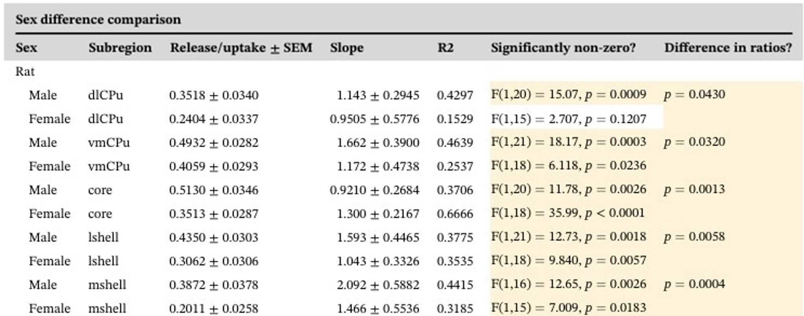
CONCLUSIONS
In conclusion, I feel like I was able to successfully replicate both the bar graphs (Figures 2a and 2b) and the linear correlation plots (Figures 3b, 3d, 3f, 3h, and 3j). I did have some discrepancies when it came to the last two correlation figures (Figure 3h: lshell and Figure 3j: mshell). Which was being caused by the differences in slopes for males in lshell and females inmshell. However, it is not clear what exactly the researchers did differently when it came to this. It is possible they excluded certain animals or maybe they corrected data because they noticed it was input incorrectly. This seems like the possible reason given that the degrees of freedom I calculated match theirs. I was able to replicate the remaining descriptive and inferential statistics for dopamine release/uptake correlations. The main challenge I had was with the two-way ANOVA and Tukey HSD tests for dopamine release and uptake. I could not replicate the values they reported. I think it is possible they applied some type of correction or in that case used a repeated-measures ANOVA since they had multiple subregions from the same animal, but they do not mention anything about this. I did try to use other packages to try and recreate this but I still could not. The researchers do mention that some of the data was excluded because of tissue air bubbles, faulty heaters, or outliers. They also mention that if an animal was excluded, then the cells in their Excel sheets would contain an “NA”. So, in that case, I made sure to remove any animals that had “NAs.” This paper also does not present or report a lot of descriptive statistics which I think would have been super helpful.
I think what this assignment taught me is that we often take for granted how we report our methods in papers. I think there is this assumption that others will automatically understand what was done, but that is not always the case. I learned how important it is to clearly describe the analyses we do in more detail in my own papers. We also need to do a better job of making data more accessible, because a lot of papers still do not make their data available. Anyway, I had fun working on this.